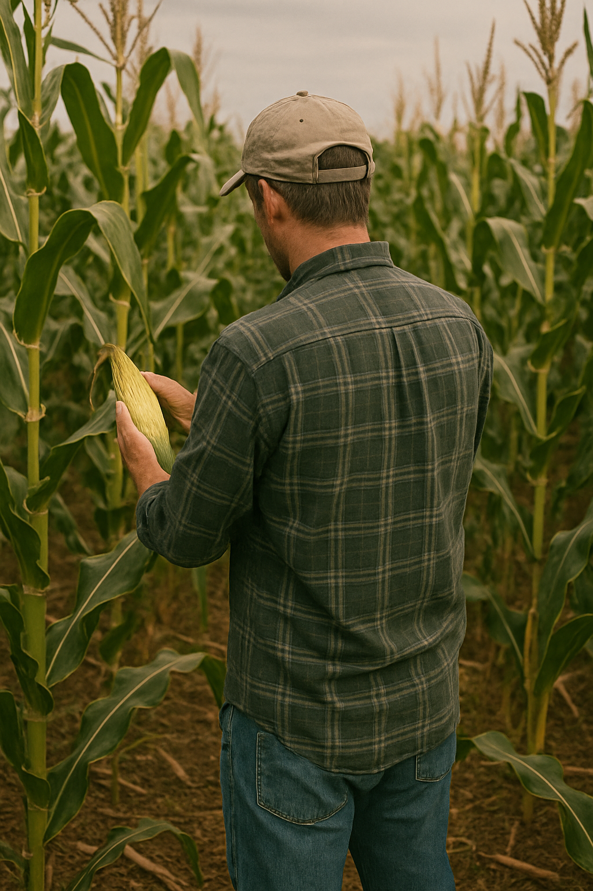
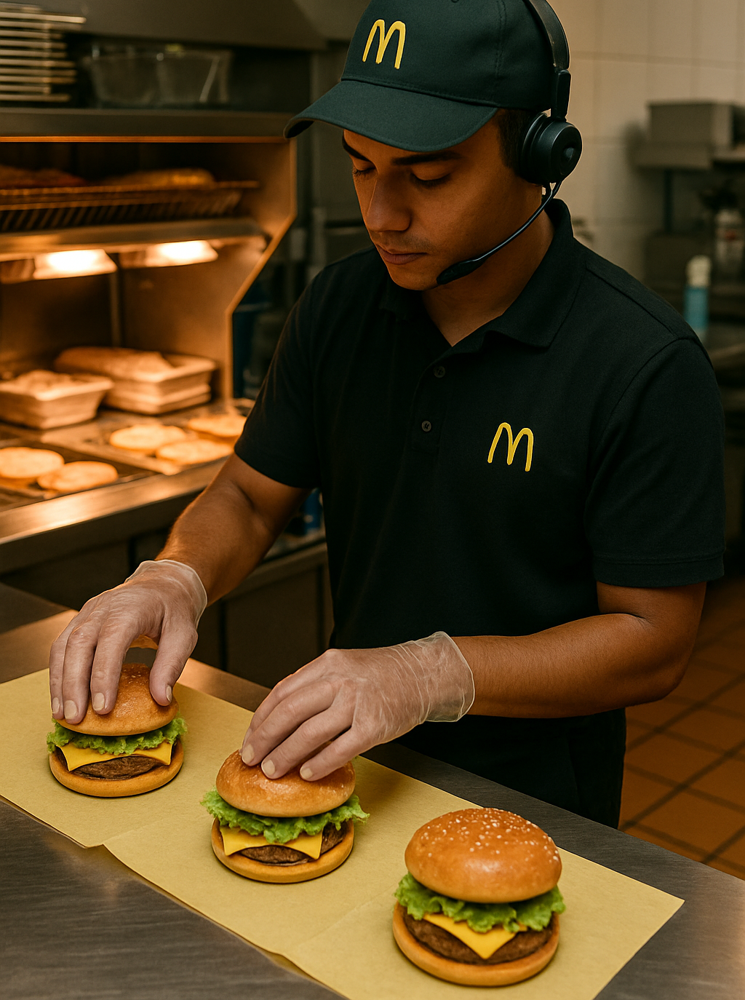

Cursus Scolaire
Collège (2017-2020)

J'ai été au Collège Irène et Frédéric Joliot-Curie à Aubière et en suis ressorti avec un Brevet Mention Très Bien.
Lycée (2020-2023)

Ensuite je me suis orienté dans une filière générale au Lycée Jeanne D'Arc de 2020 à 2023. Avec une option Physique arrêtée en 1ère et options Mathématiques et NSI suivies en Terminale et je suis sorti de cette formation avec un Bac mention Bien.
Prépa (2023)

Ayant bien réussi mon année de Terminale, j'ai pensé pouvoir poursuivre mes études en Prepa MP2I au Lycée Lafayette. Cependant j'ai rencontré quelques difficultés dans la prépa, notamment le fait que les cours était trop abstrait pour moi. Il n'y avait pas assez de concret pour moi qui aime manipuler ce que je dois utiliser. J'ai donc quitté la prépa en décembre 2023 car l'enseignement donné là-bas ne me correspondait pas.
BUT info (2024-....)

La première année s'est bien passée, je me suis bien intégré et je me plais dans cette filière qui a beaucoup plus de manipulation que la prépa. Le travail fait dans cet formation est très intérressant et nous ne faisons pas que de l'informatique mais aussi de la gestion de projet, de l'économie, et des systèmes financiers par exemple qui nous aidera bien dans notre vie professionel plus tard.
Cursus Professionel
Ouvrier Agricole (Eté 2023)
 J'ai été un
Assistance à chef de projet (2023)
Ma belle mère avait besoin de main d'oeuvre pour un projet informatique qu'elle avait dans son entreprise, je l'ai donc aidé à réaliser son travail ( recherche et incrustation d'images libre de droits dans un site web)
Equipier polyvalent Mcdonald (mars-aout 2024)
Ayant quitté la prépa en décembre, je n'allais pas rester à rien faire jusqu'à la rentrée, j'ai donc travaillé chez McDonald en tant qu'équipier polyvalent (métier sans besoin d'expérience ni de grande formation)
Notateur de champ (été 2025)
Je vais cet été travailler en tant que notateur de champs pour l'entreprise Limagrain, je vais contrôler et approuver le fait que les champs soient bien aux normes pour leur utilisation par Limagrain